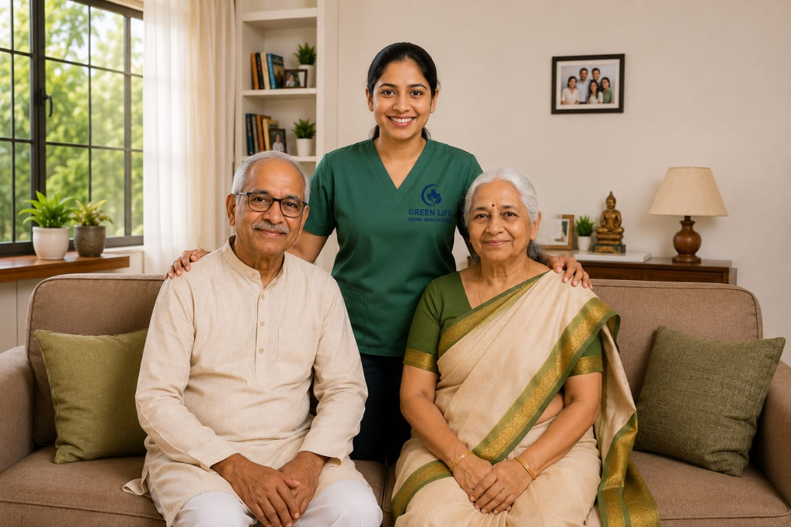
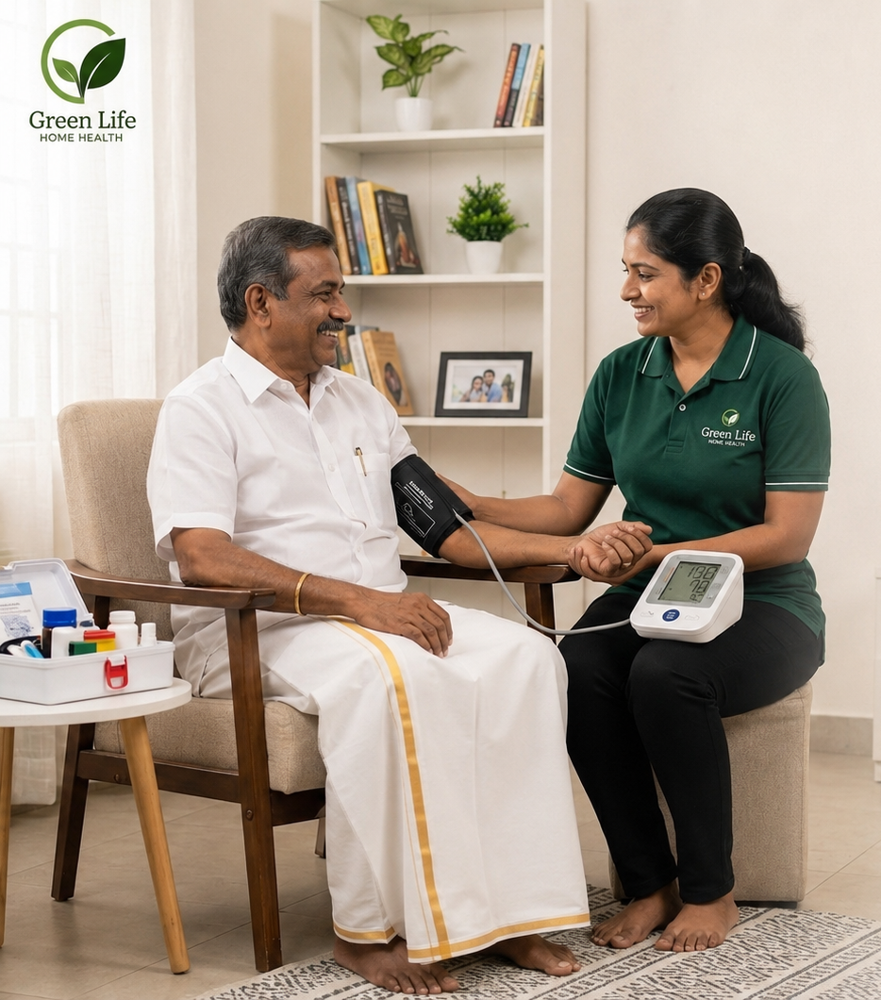

01Nursing Care at Home
Skilled bedside nursing and medical routine support.

Professional care at home for nursing, critical care, physiotherapy, post operative recovery, geriatric care, palliative care, doctor's visits and pediatric support.

Green Life Home Health Care supports families across Chennai with practical, respectful home care. We focus on safe routines, caregiver reliability, and communication that makes decision-making easier.
Know About UsShort previews only. Visit the services page for full details, or book directly in two clicks.
Skilled bedside nursing and medical routine support.

Close monitoring and higher-dependency care support at home.

Mobility, strength and pain-management support at home.

Recovery support after hospital discharge or surgery.

Daily comfort, companionship and safety routines for seniors.

Comfort-focused support for long-term and serious illness.

Doctor consultation at home for elderly and recovering patients.

Gentle child-focused home support for family peace of mind.

Daily patient care, supervision and caretaker support at home.
Caregivers are selected based on patient condition and family expectations.
Care is delivered in a familiar setting with dignity and patience.
Simple guidance before confirming visits, shifts or ongoing care.
Fast coordination for homes across Chennai.
Calm communication for older patients and anxious families.
I searched many home care agencies for my grandfather after his surgery. Green Life was the only affordable agency in Chennai, and they genuinely cared for both patient and family.
Green Life stands out as a reliable and compassionate choice. Their patient-first approach tailors every service to the individual, and caregivers are highly trained and genuinely kind.
Good agency. When I needed a caretaker for my father, Mr. Sridhar sent Mr. Anandh, who took care of my father very well with great respect and empathy.
Tell us the patient need and preferred date. WhatsApp contact stays quick and direct.